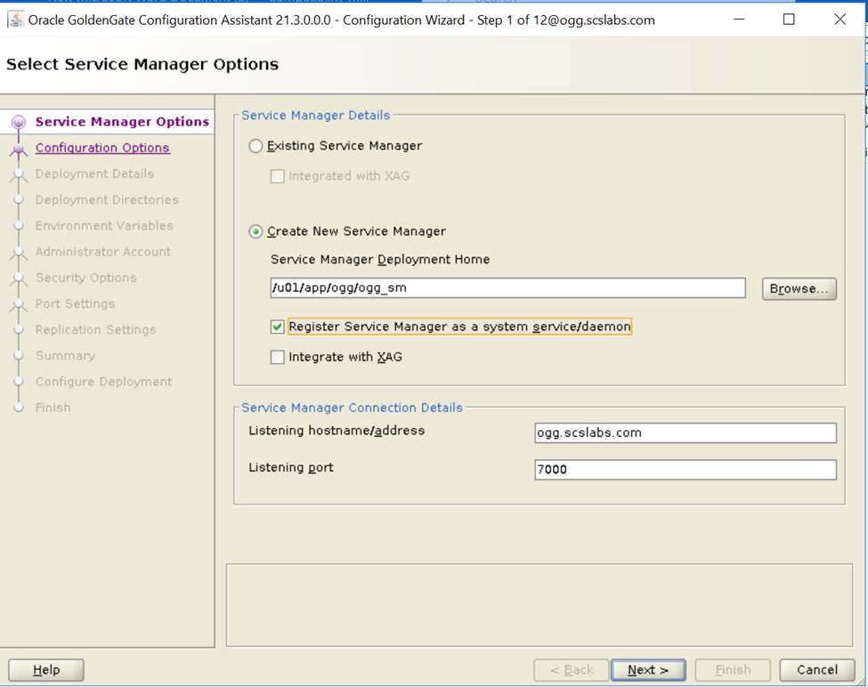
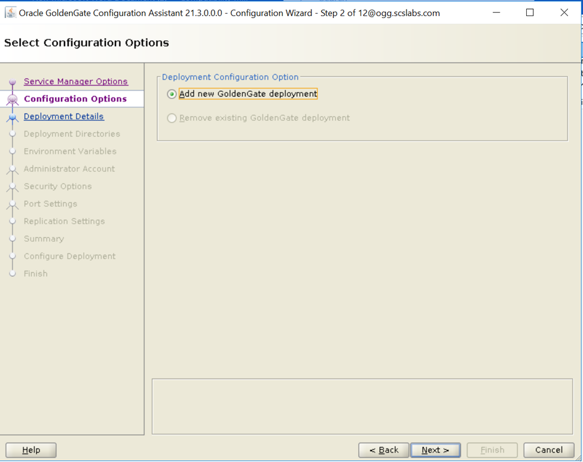
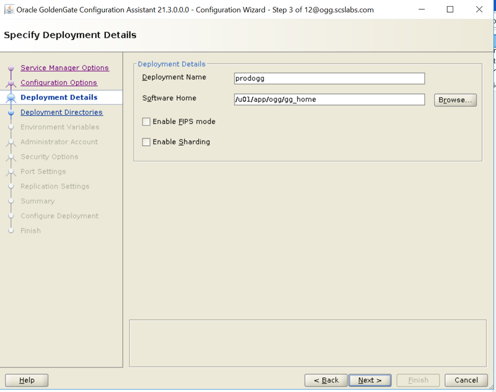
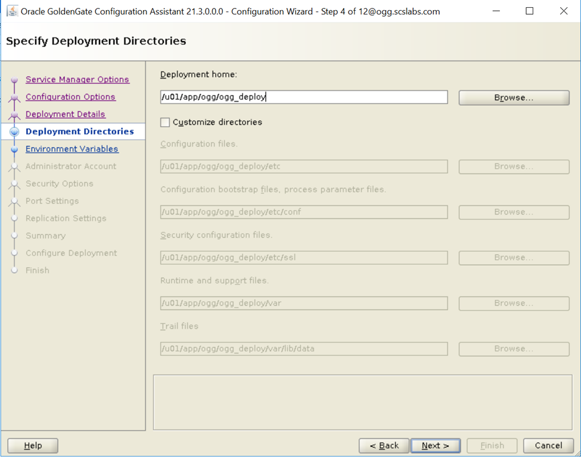
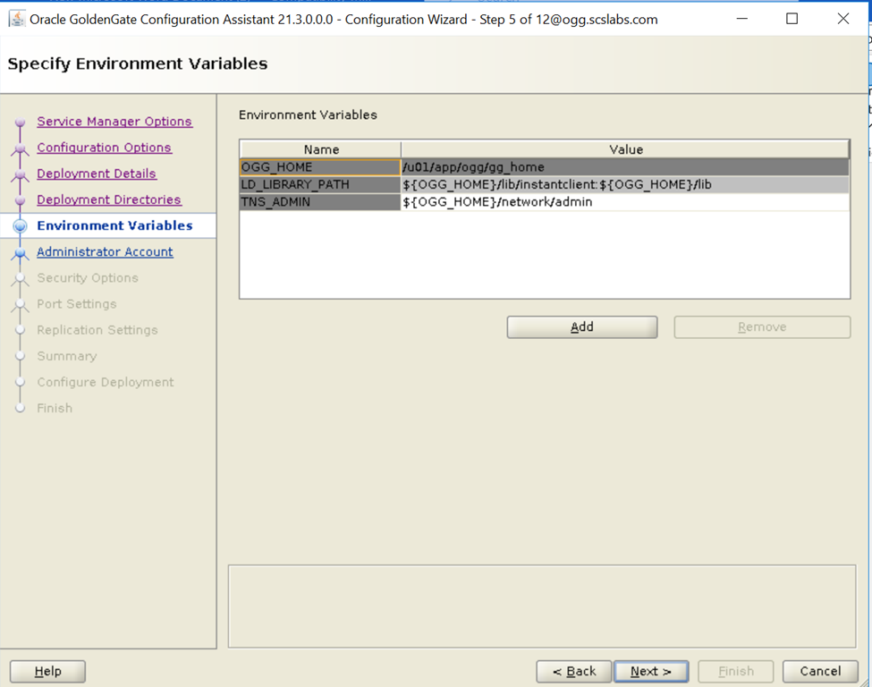
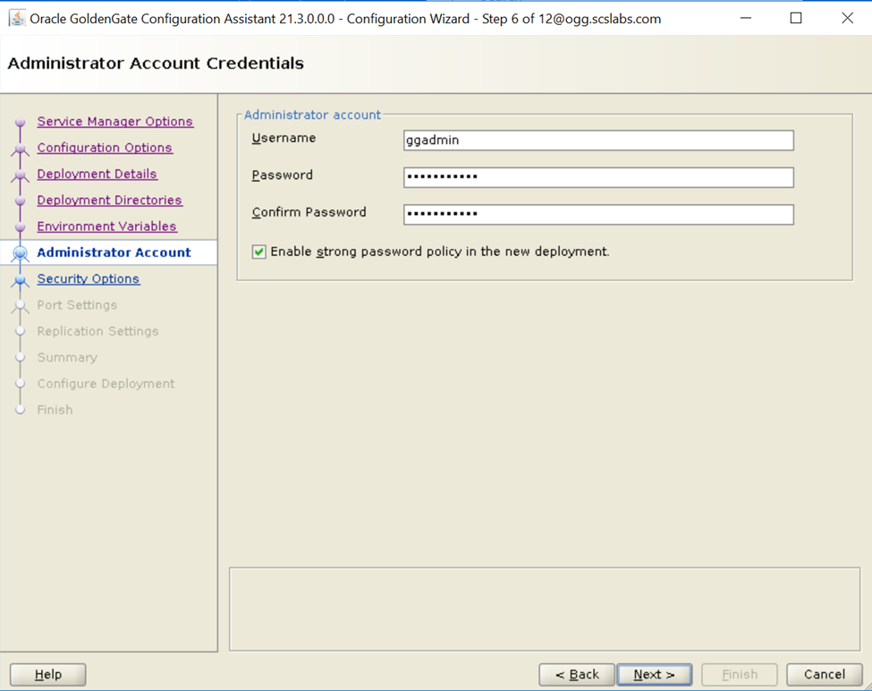
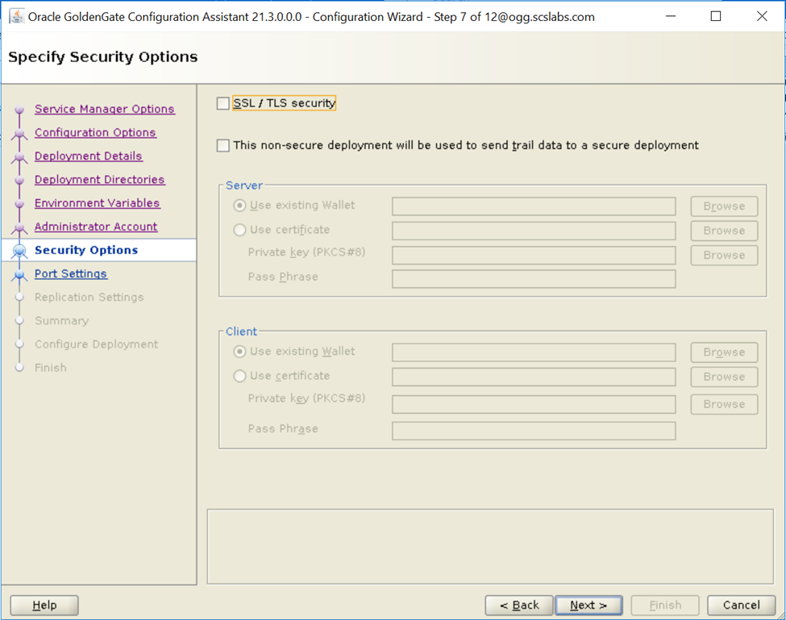
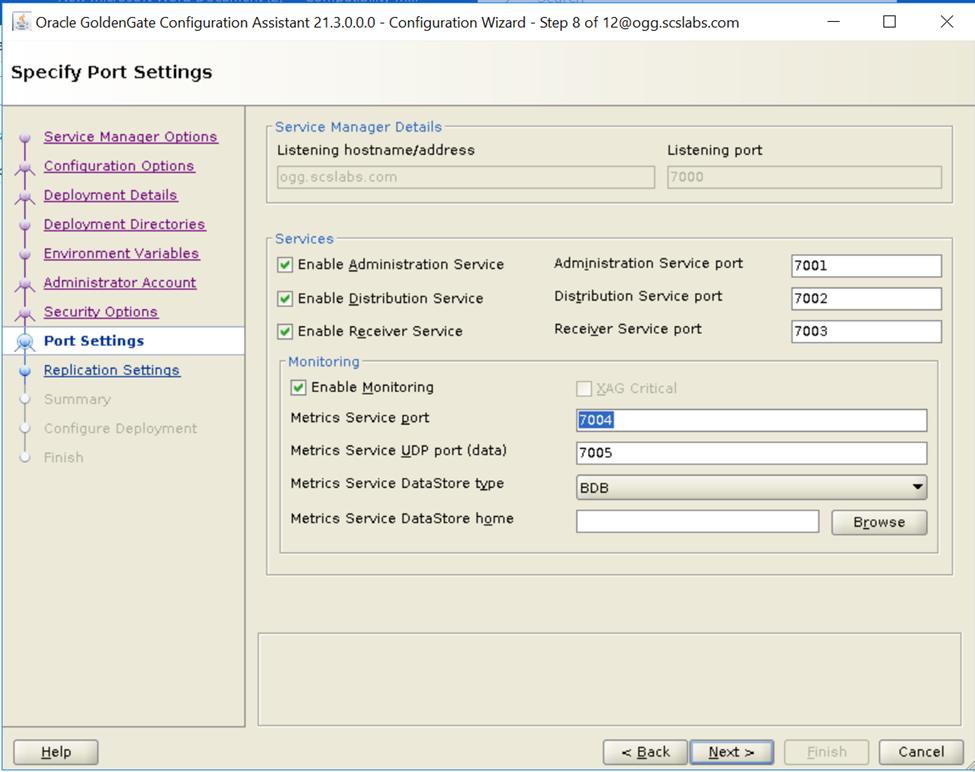
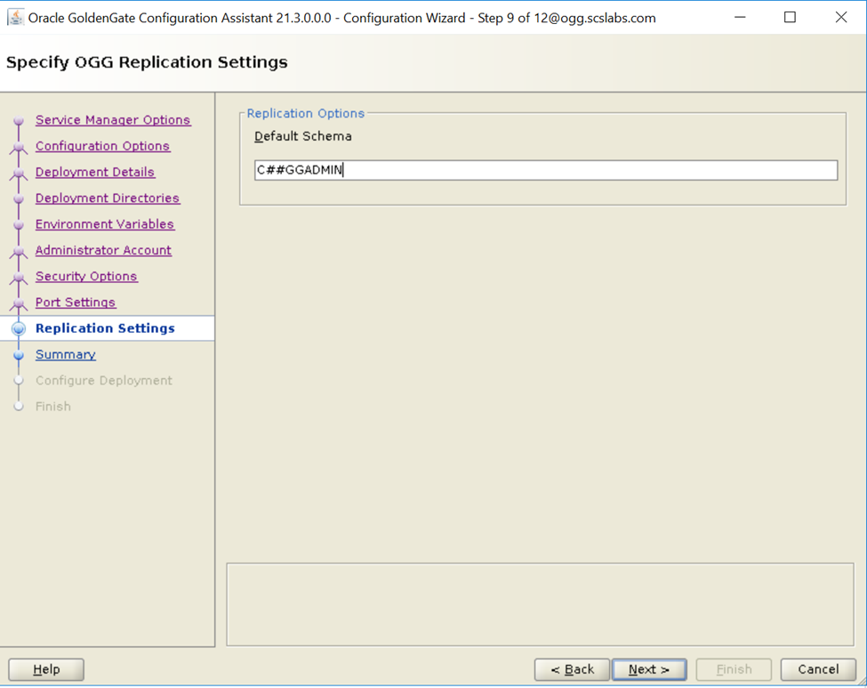
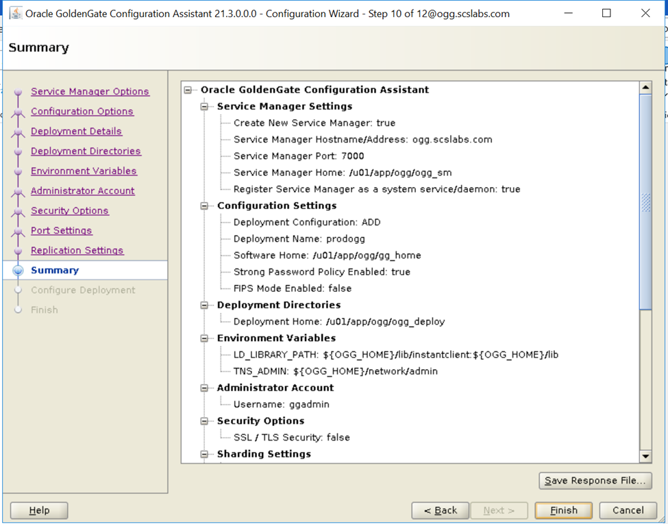

In this post we install Oracle GoldenGate 21c Microservices Architecture (21.3) on Oracle Linux 7: install the software with the Oracle Universal Installer, then create a Service Manager and a deployment with the configuration assistant (oggca.sh), register the Service Manager as a system service, and log in to the web consoles.
| Item | Value in this lab |
|---|---|
| Host | ogg.scslabs.com (192.168.1.11) |
| GoldenGate home | /u01/app/ogg/gg_home |
| Service Manager home | /u01/app/ogg/ogg_sm · port 7000 |
| Deployment | prodogg · home /u01/app/ogg/ogg_deploy |
| Service ports | Administration 7001 · Distribution 7002 · Receiver 7003 · Performance Metrics 7004 (UDP 7005) |
| Admin user | ggadmin |
oracle user in the oinstall group.oracle user (VNC, MobaXterm or X11 forwarding) — both the installer and oggca.sh are GUIs.cd /u01/soft/
ls
213000_fbo_ggs_Linux_x64_Oracle_services_shiphome.zip
unzip 213000_fbo_ggs_Linux_x64_Oracle_services_shiphome.zipThe zip extracts the installer, a README and the release notes:
213000_fbo_ggs_Linux_x64_Oracle_services_shiphome.zip OGG-21.3.0.0-README.txt
fbo_ggs_Linux_x64_Oracle_services_shiphome oracle-goldengate-release-notes_21.3.pdfcd /u01/soft/fbo_ggs_Linux_x64_Oracle_services_shiphome/Disk1/
./runInstallerStarting Oracle Universal Installer...
Checking Temp space: must be greater than 120 MB. Actual 54806 MB Passed
Checking swap space: must be greater than 150 MB. Actual 4095 MB Passed
Checking monitor: must be configured to display at least 256 colors. Actual 16777216 PassedWalk through the wizard: choose the option for Oracle Database 21c and lower, set the software location to /u01/app/ogg/gg_home, and — on a host's first Oracle install — set the inventory to /u01/app/oraInventory with group oinstall.
The Install Wizard, from installation option to the root script prompt.
When prompted, run the inventory script as root, then click OK to finish:
/u01/app/oraInventory/orainstRoot.shRun the configuration assistant from the GoldenGate home:
cd /u01/app/ogg/gg_home/bin
./oggca.shThe wizard has 12 steps. The key choices:
| Step | Setting |
|---|---|
| Service Manager options | Create new Service Manager at /u01/app/ogg/ogg_sm, host ogg.scslabs.com, port 7000, register as a system service/daemon |
| Configuration options | Add new GoldenGate deployment |
| Deployment details | Name prodogg, software home /u01/app/ogg/gg_home |
| Deployment directories | Deployment home /u01/app/ogg/ogg_deploy (sub-directories filled in automatically) |
| Environment variables | OGG_HOME, LD_LIBRARY_PATH, TNS_ADMIN (defaults) |
| Administrator account | ggadmin with a strong password |
| Security options | SSL/TLS off (lab only) |
| Port settings | 7001–7005, monitoring enabled, BDB datastore |
| Replication settings | Default schema C##GGADMIN |










oggca.sh steps 1–10.
Click Finish. Part way through, the assistant asks you to run a script as root so the Service Manager starts at boot:
/u01/app/ogg/ogg_sm/bin/registerServiceManager.shOGG_HOME=/u01/app/ogg/gg_home
OGG_CONF_HOME=/u01/app/ogg/ogg_sm/etc/conf
OGG_VAR_HOME=/u01/app/ogg/ogg_sm/var
OGG_USER=oracle
Running OracleGoldenGateInstall.sh...
Created symlink from /etc/systemd/system/multi-user.target.wants/OracleGoldenGate.service to /etc/systemd/system/OracleGoldenGate.service.Click OK, and the configuration completes:
systemctl status OracleGoldenGate.service● OracleGoldenGate.service - Oracle GoldenGate Service Manager
Loaded: loaded (/etc/systemd/system/OracleGoldenGate.service; enabled; vendor preset: disabled)
Active: active (running) since Fri 2024-06-21 06:39:24 UTC; 53s ago
Main PID: 10048 (ServiceManager)
CGroup: /system.slice/OracleGoldenGate.service
└─10048 /u01/app/ogg/gg_home/bin/ServiceManager --inventory '/u01/app/ogg/ogg_sm/etc/conf'
...
Oracle GoldenGate Service Manager for Oracle
Version 21.3.0.0.0 OGGCORE_21.3.0.0.0_PLATFORMS_2...If you'll reach the consoles from another machine, open the ports in the firewall:
firewall-cmd --permanent --add-port=7000-7005/tcp
firewall-cmd --reloadThe Service Manager runs on port 7000 — http://192.168.1.11:7000. Log in as ggadmin; it lists the four prodogg services, all running:
The Administration Service on port 7001 is where you create Extracts and Replicats:
./runInstaller -silent -responseFile /path/oggcore.rsp and ./oggca.sh -silent -responseFile /path/oggca.rsp for repeatable installs.Next: Replicate tables with Oracle GoldenGate 21c · Background: Understand Oracle GoldenGate: Architecture, Purpose and Use Cases